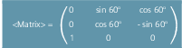

The LENTOAX function provides information about the assignment of tool lengths L1, L2 and L3 of the active tool to the abscissa, ordinate and applicate. The assignment of abscissa, ordinate and applicate to the geometry axes is affected by frames and the active plane (G17 - G19).
Only the geometry component of a tool ($TC_DP3[<t>,<d>] to $TC_DP5[<t>,<d>]) is considered, i.e. a different axis assignment for other components (e.g. wear) has no effect on the result.
| Predefined function to read the assignment of tool lengths L1, L2 and L3 of the active tool to the coordinate axes | |||
Alone in the block: | Yes | |||
| Function return value. Negative values indicate error states. | |||
Data type: | INT | |||
Value: | 0 | Function OK Information provided in <AxInd> is sufficient for the description (all tool length components are in parallel to the geometry axes). | ||
1 | Function is OK, however, the content of <Matrix> must be evaluated for a correct description (the tool length components are not parallel to the geometry axes). | |||
-1 | Invalid string in parameter <Coord>. | |||
-2 | No tool active. | |||
Parameters | ||||
1 |
| If the tool length components are parallel to the geometry axes, the axis indices assigned to length components L1 to L3 are returned in the <AxInd> array.
| ||
Data type: | INT[3] | |||
Value: | 0 | No assignment exists (axis does not exist) | ||
1 ... 3 or -1 ... -3 | Number of the length effective in the corresponding coordinate axis. The sign is negative if the tool length component is pointing in the negative coordinate direction. | |||
If not all length components are parallel or antiparallel to the geometry axes, the index of the axis, which contains the largest part of a tool length component, is returned in <AxInd>. In this case (if the function does not return an error for a different reason), then the return value is <Status> = 1. The mapping of tool length components L1 to L3 to geometry axes 1 to 3 is then described completely by the content of the 2nd parameter <Matrix>. | ||||
2 |
| Matrix which represents the vector of the tool lengths (L1=1, L2=1, L3=1) to the vector of the coordinate axes (abscissa, ordinate, applicate), i.e. the tool length components are assigned to the columns in the order L1, L2, L3 and the axes are assigned to the lines in the order abscissa, ordinate, applicate. | ||
Data type: | REAL | |||
All elements are always valid in the matrix, even if the geometry axis belonging to the coordinate axis is not available, i.e. if the corresponding entry in <AxInd> is 0. | ||||
3 |
| coordinate system applicable for the assignment (optional) | ||
Data type: | STRING | |||
Characters: | MCS M | The tool length is represented in the machine coordinate system. | ||
BCS B | The tool length is represented in the basic coordinate system. | |||
WCS W | The tool length is represented in the workpiece coordinate system (default setting). | |||
KCS K | The tool length is represented in the tool coordinate system of the kinematic transformation. | |||
TCS T | The tool length is represented in the tool coordinate system. | |||
The notation of the characters in the string (upper or lower case) is arbitrary. If the parameter <Coord> is not specified, then WCS is used (default setting). | ||||
| Note |
In the TCS, all tool length components are always parallel or antiparallel to the axes. The components can only be antiparallel when mirroring is active and the following setting data is activated: SD42900 $SC_MIRROR_TOOL_LENGTH (sign change tool length when mirroring) |
Standard application, milling tool for G17.
L1 applies in Z (applicate), L2 applies in Y (ordinate), L3 applies in X (abscissa).
Function call in the form:
<Status>=LENTOAX(<AxInd>,<Matrix>,"WCS")The result parameter <AxInd> then contains the values:
<AxInd>[0] = 3
<AxInd>[1] = 2
<AxInd>[2] = 1
Or, in short: (3, 2, 1)
In this case, the associated matrix (<Matrix>) is:
A change from G17 to G18 or G19 does not alter the result, because the assignment of the length components to the geometry axes changes in the same way as the assignment of the abscissa, ordinate and applicate.
A frame rotation of Z through 60 degrees is now programmed with G17 active, e.g.
ROT Z60The direction of the applicate (Z direction) remains unchanged; the main component of L2 now lies in the direction of the new X axis; the main component of L1 now lies in the direction of the negative Y axis. As a consequence, the return value (<Status>) is "1", <AxInd> contains the values (2, -3, 1).
In this case, the associated matrix (<Matrix>) is:
